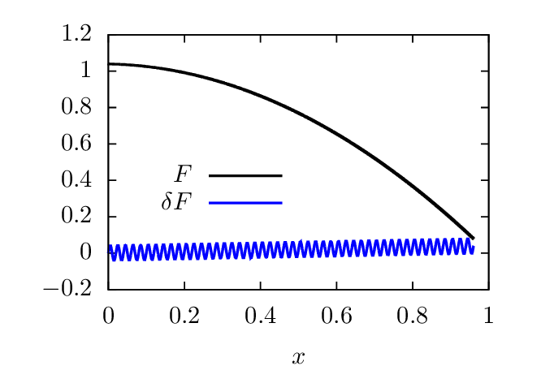
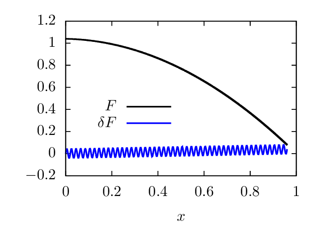

Turbulence in tokamaks are usually of short perpendicular (to B0) spatial scale lengths of order ρi, which is much smaller than the macroscopic scale length L0 (i.e., λ = ρi∕L0 is a small parameter). Therefor physical quantities fg can be separated into macroscopic and microscopic parts as
|
| (53) |
where F is defined by
|
| (54) |
which is the averaging of fg over (several times of) the short-scale perpendicular spatial scale. This is to say, Fg is constant over the short scale length ρi in the perpendicular direction, i.e., the perpendicular spatial scale length of Fg is much larger than ρi. This long perpendicular scale length of Fg is denoted by L0. Equations (53) and (54) imply that
 | (55) |
An example of this two-scales expansion in one-dimension case is given in Fig. 2.
 

The expansion for the electromagnetic field given by Eqs. (41) and (42) should also be considered to be in this two-spatial-scale expansion. Using this expression in Eq. (49), we obtain
|
| (56) |
Performing the perpendicular short scale length averaging on both sides of the above equation, we obtain
 | (57) |
where use has been made of ⟨LgδFg⟩X⊥ = 0 and ⟨δRFg⟩X⊥ = 0. Subtracting the above equation from Eq. (56), we obtain
 | (58) |